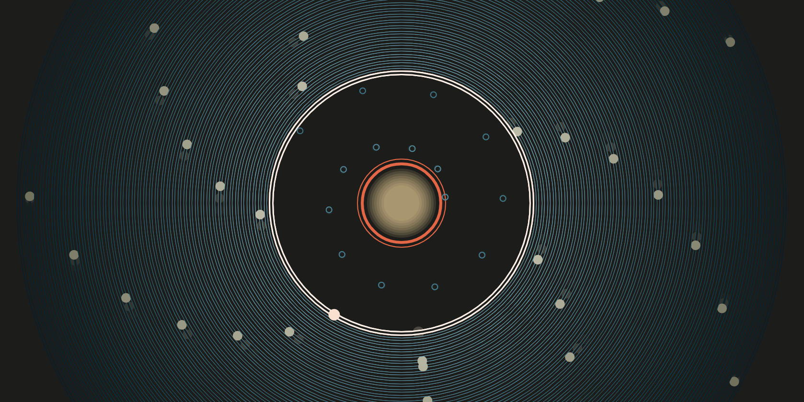

Generative Art: while learning p5js, I was introduced to the realm of generative art, more specifically generative landscapes. I challenged the balance between control and randomness so that my program produces similar yet unpredictable terrains.
Interactive Art: I started exploring interactive art in highschool, playing with TouchDesigner and Arduino to create interactive experiences employing sound, touch, and light. I continue to experiment with different interactive mediums such as building telematic environments and using facial and body recognition.
UI/UX Design: I enjoy challenging myself to create designs that depends on the user—balancing artistic practices that challenge the boundaries of design and an easy user experience.